11 plates. Deterministic overlays rendered by the composition-analysis skill.
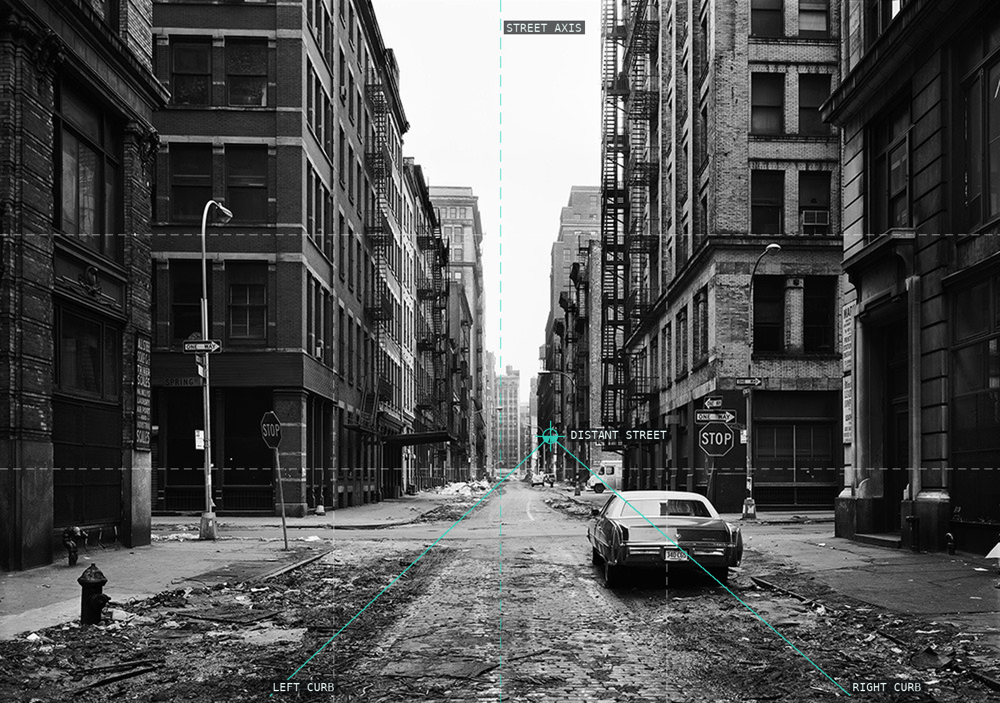
01-crosby-street-new-york-soho The empty street is held as a centered corridor; curbs and façades tighten toward a distant opening.
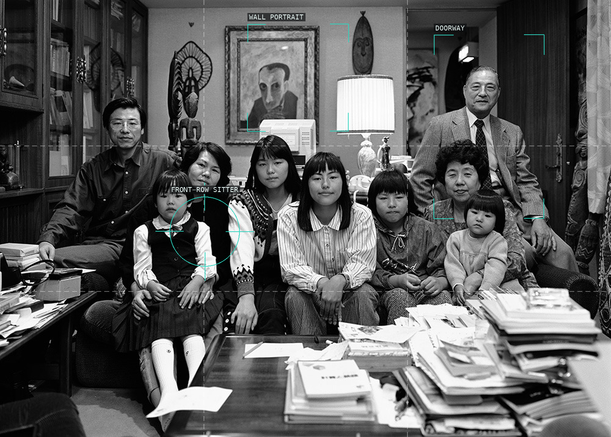
02-the-hirose-family-hiroshima The frontal family arrangement is deepened by a portrait above and two table edges below.
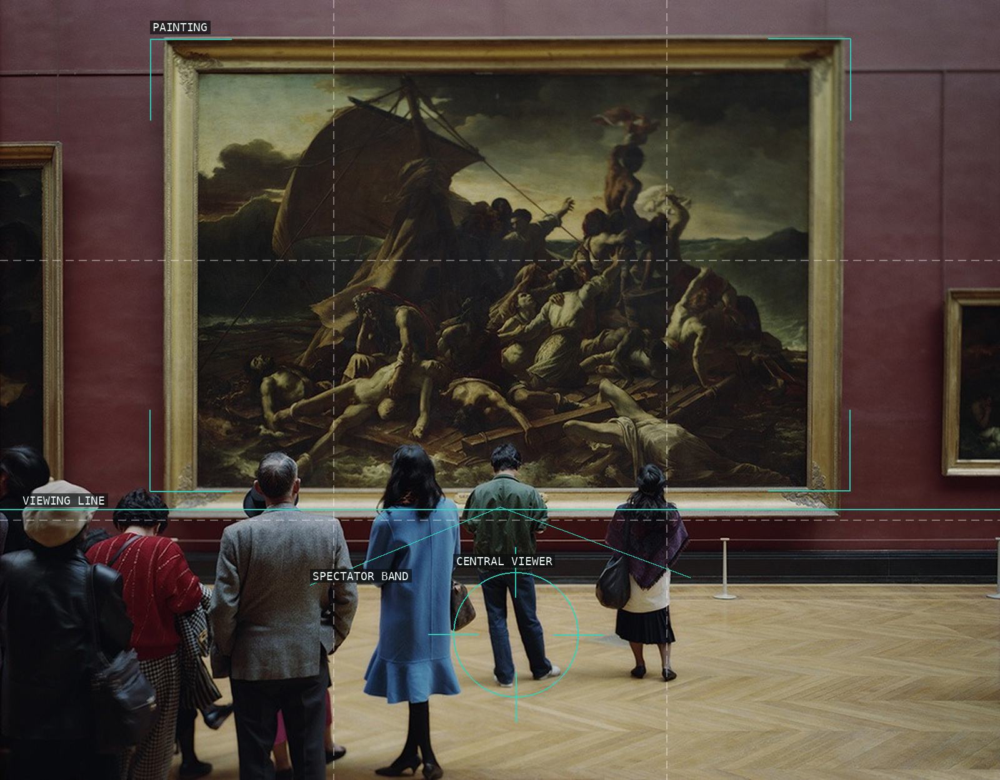
03-louvre-4-paris The painting's frame contains one scene while a low band of viewers makes looking the second subject.
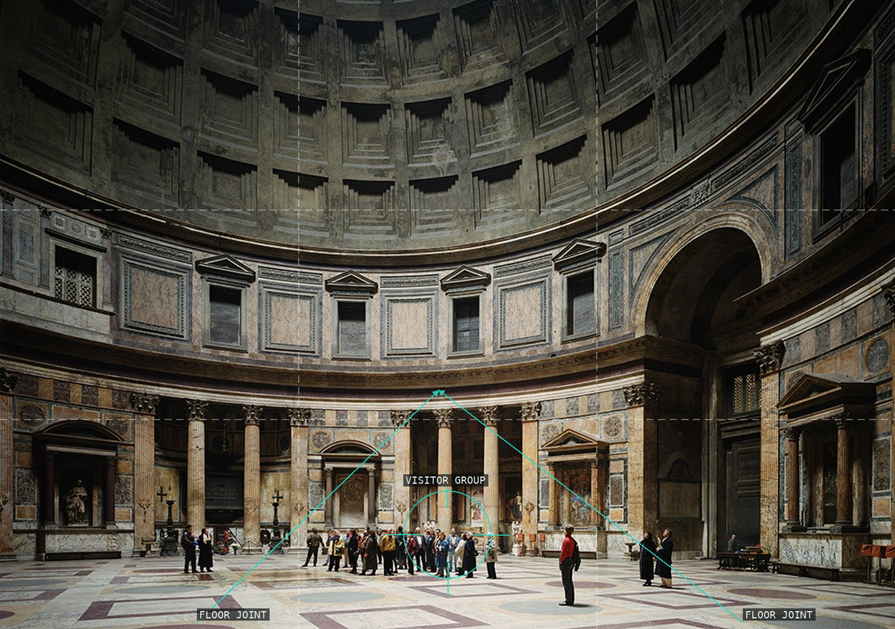
04-pantheon-rome Floor joints converge on a small visitor group, making the monumental interior legible through human scale.
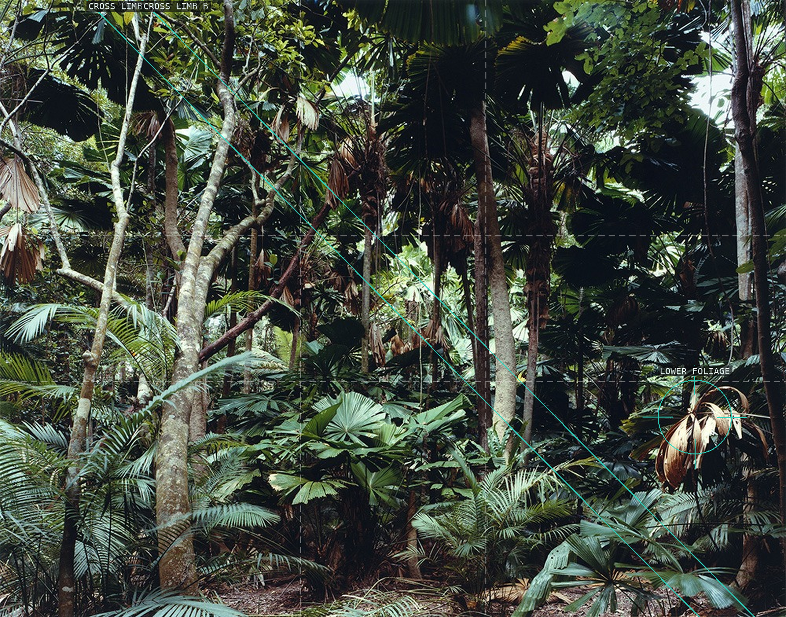
05-paradise-02-daintree Crossing trunks supply local routes, but the foliage refuses a single dominant center.
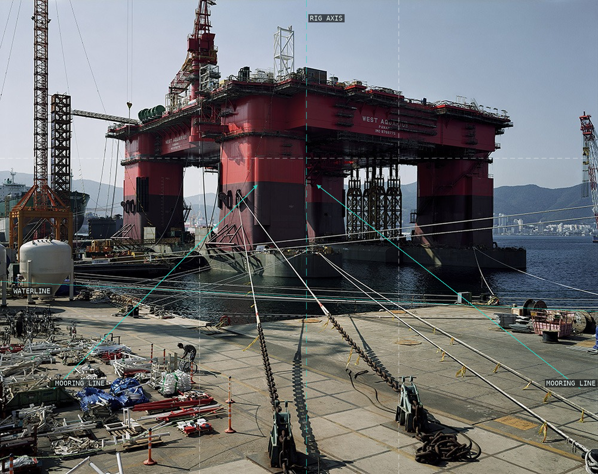
06-semi-submersible-rig A massive, nearly bilateral rig is crossed by working lines that link the foreground dock to the hull.
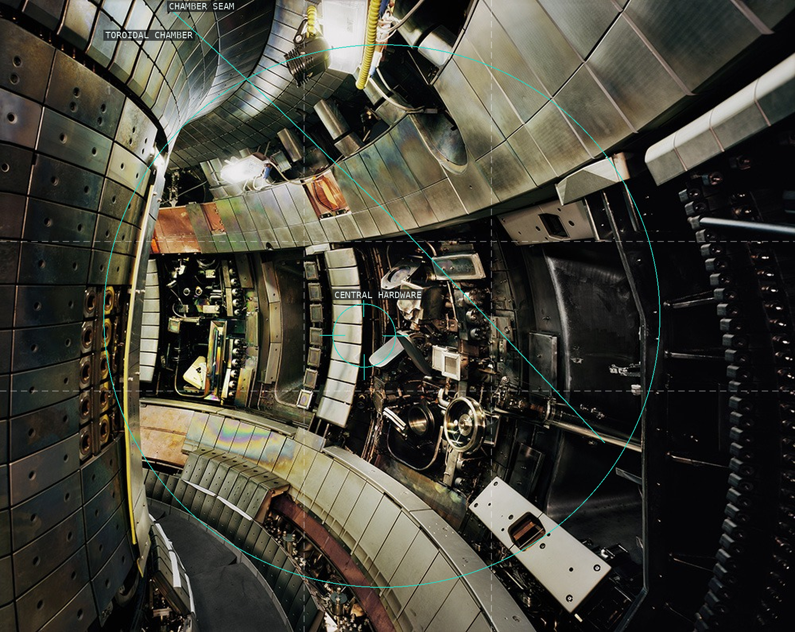
07-tokamak-asdex-upgrade-interior-2 Concentric metal segments curve around a compact central assembly, making the machine both enclosure and subject.
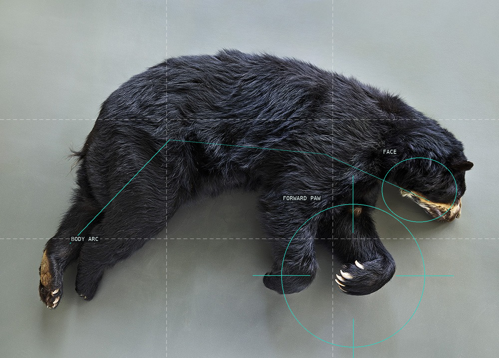
08-brillenbaer-leibniz-izw The bear's suspended body forms one large dark arc, with face and forward paw locating its direction against a blank institutional ground.
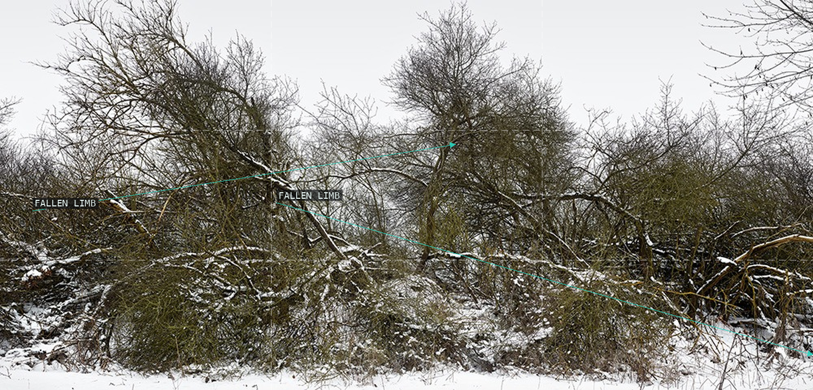
09-schlichter-weg Two fallen limbs push attention laterally through a crowded winter thicket.
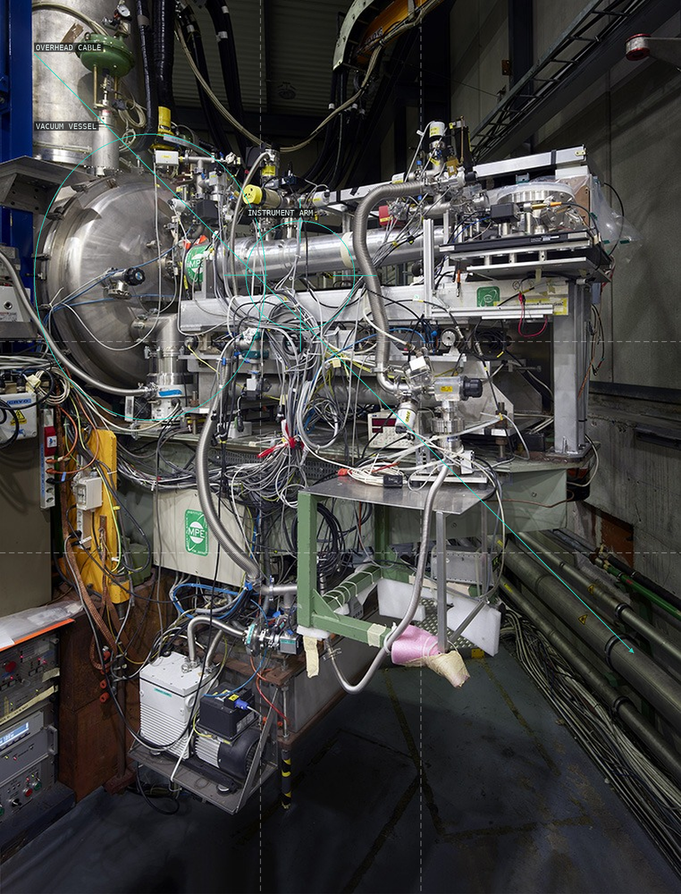
10-x-ray-telescope-cast The telescope's circular vessel initiates a vertical stack of cables, rails, and instrument arms.
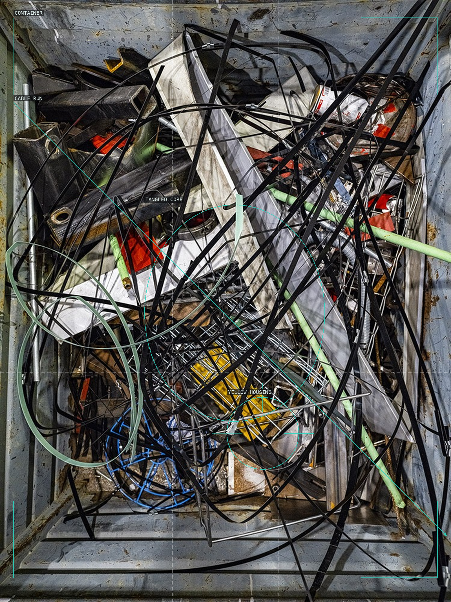
11-container-7-cern The container's hard boundary holds a centered mesh of scrap and cable, with one bright component creating a local stop.